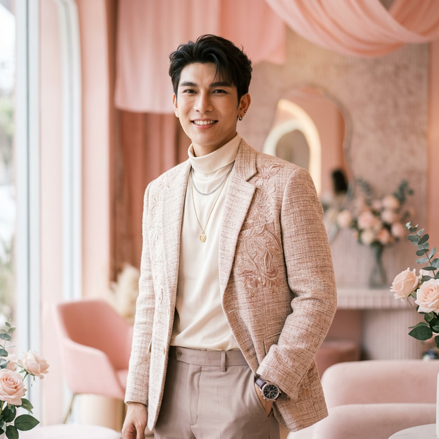
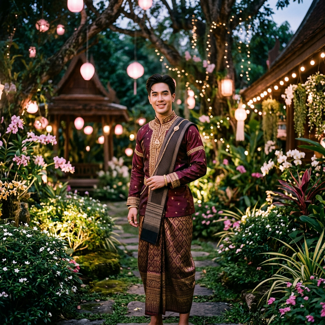
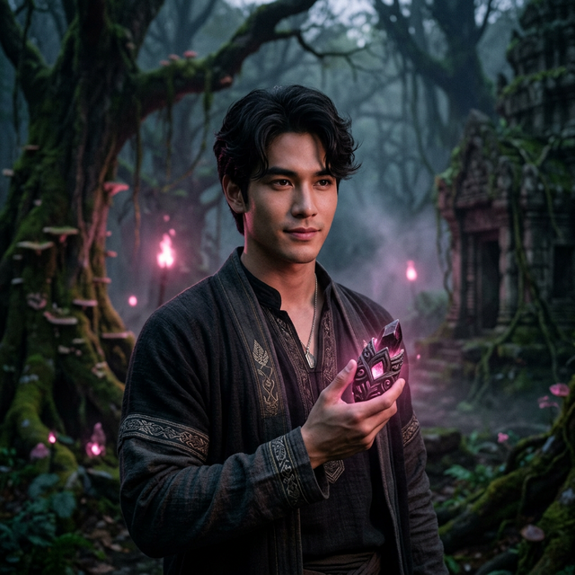

วรรณกร เรืองรัตน์ (เฟิร์สวัน) - การผสมผสานที่ลงตัวระหว่าง ทัศนคติวิศวกร จิตวิญญาณศิลปินดนตรี และฝีมือการแสดงที่ตราตรึงใจ

เฟิร์สวันคือนักแสดงและศิลปินภายใต้สังกัด **Domundi TV** และ **DMD Music** ผู้ที่ก้าวข้ามขีดจำกัดจากการเป็นเพียงนักแสดงซีรีส์วาย สู่การเป็นศิลปินพหุศักยภาพ ด้วยพื้นฐานการศึกษาจากคณะวิศวกรรมศาสตร์ มหาวิทยาลัยเชียงใหม่ ทำให้เขามีภาพลักษณ์ที่น่าเชื่อถือและเข้าถึงได้ง่าย (Relatability)
เขาไม่ได้มองว่างานแสดงคือจุดสิ้นสุด แต่ดนตรีคือแรงผลักดันหลักที่ทำให้เขาก้าวเข้าสู่วงการบันเทิง การทำงานอย่างหนักและการเป็นพื้นที่ปลอดภัย (Safe Space) ให้กับแฟนคลับ ทำให้เขาสถาปนาแบรนด์ส่วนตัวได้อย่างมั่นคง

ผลงานการแสดงเต็มตัวเรื่องแรกในแนวโรแมนติก พีเรียด แฟนตาซี
Debut Work
บทบาท "เจตนา" (บักเจต) เด็กหนุ่มผู้มีวิชาอาคมและจิตใจที่จริงใจ
ก้าวสำคัญในบทนำเต็มตัว ถ่ายทอดชีวิตในแวดวง Content Creator
UpcomingFirst Love
BEATFOREST 2026
DMD Music Official Artist
"ดนตรีคือเหตุผลหลักที่ผมเข้าสู่วงการ"
เป้าหมายที่ชัดเจนที่สุดของเฟิร์สวันคือการเป็น "ศิลปินเพลง" เขาเปิดตัวเป็นศิลปินเดี่ยวด้วยซิงเกิล **"First Love"** ที่เน้นอารมณ์คลั่งรักและเป็นพื้นที่ปลอดภัยให้แฟนคลับ ความสามารถในการถ่ายทอดอารมณ์ผ่านน้ำเสียงที่เป็นเอกลักษณ์ (High-quality vocals) ทำให้เขาได้รับการยอมรับในฐานะนักร้องตัวจริง
ความสำเร็จที่การันตีฝีมือจากเวที Y Universe Awards 2025
รางวัลนักแสดงสมทบยอดเยี่ยม (บทเจตนา จาก เขมจิราต้องรอด)
รางวัลนักแสดงที่มีเสน่ห์ดึงดูดและเป็นที่รักของแฟนคลับ
รางวัลดาวรุ่งพุ่งแรงที่มีศักยภาพสูงสุดในอุตสาหกรรม
Patience • Trust • Support
สายสัมพันธ์อันเหนียวแน่นระหว่างพาร์ทเนอร์ เติ้ล-เฟิร์สวัน ที่ก่อตัวเป็นกลุ่มแฟนคลับที่อบอุ่นที่สุด พร้อมเคียงข้างกันในทุกวันที่ฝนพรำ